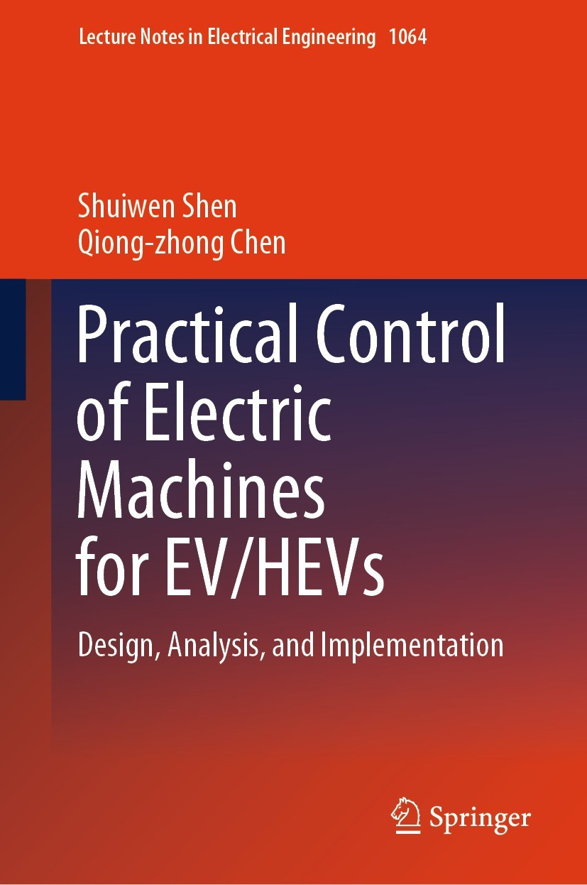
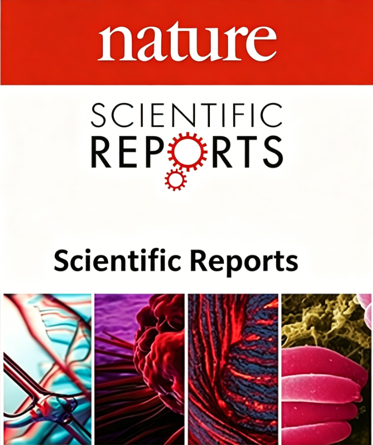
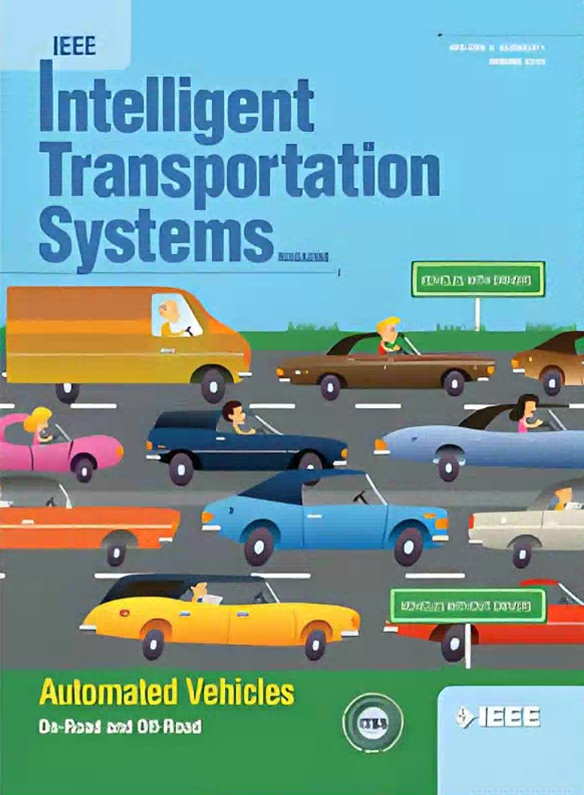

学术成果


近三年团队主要在研项目
- 厦门重大科技专项：高安全高可靠商用车智能集成底盘技术研究及产业化，2026-2028，50万
- 福建省高校产学合作项目：车辆分布驱动智能力矩矢量控制的关键技术研究及应用，2024-2027，60万
- 福建省外专百人项目：福建省引才引智计划项目，2024-2025，20万
- 厦门理工学院高层次人才项目：可信人工智能及在车辆智能控制和智能驾驶的研究，2023-2026，640万
- 厦门理工学院引进人才学科建设项目：智能网联汽车创新研究中心，2024-2026，160万
- 商用车高阶智能驾驶规控技术开发 / ZK-HX25118 横向课题 / 企事业单位委托科技项目，150万
专著论文
- Shuiwen Shen. Practical Control of Electric Machines for EV/HEVs (Monograph). Springer, 2023.
- Yuxuan Chang, Chenlei Hou, Zhiqun Yuan, Weiqiang Chen, Zhenyu Qin, Xuewu Ji, Shuiwen Shen. Manifold-based adaptive cruise control for autonomous vehicles [J]. IEEE Transactions on Intelligent Transportation Systems, 2026.
- Zhenyu Qin, Jiaqi Wang, Panxue Liu, Shuiwen Shen. Real Time Tire Stiffness Estimation Using Enhanced GDM and RLS for Autonomous Vehicles [J]. Nature Scientific Reports, 2025.
- Luigi D'Apolito, Tianwei Gu, Hanchi Hong, Wenbo Zhang, Shuiwen Shen. State of charge evaluation of lithium-ion batteries under wide temperature range using multi-feature ultrasonic indicators [J]. IIonics, 2025, Vol.31, p4239-4260.
- Luigi D'Apolito, Long Sun, Hanchi Hong, Xiang Song, Shuiwen Shen. Nanofluid-based counterflow immersion cooling for lithium-ion battery during fast charging [J]. Journal of Thermal Science and Engineering Applications, 2025, 17(8): 081001.
- Ye Wang, Hanchi Hong, Yan Xiao, Honglei Zhang, Rui Wang, Zhenyu Qin, Shuiwen Shen. On Slope Attitude Angle Estimation for Mass-Production Range-Extended Electric Vehicles Based on the Extended Kalman Filter Approach [J]. World Electric Vehicle Journal, 2025, 16(4): 210.
发明专利
- 基于集成底盘的车辆稳定性智能预期控制方法 申水文；杜彭涛；洪汉池；王子睿；王嘉淇；谢欣君 ZL 2025 1 0163148.5
- 一种专用于车辆类驾驶和控制的可信人工智能方法 申水文；常宇轩；张敏；杨上东；袁志群；曾晓榕；王嘉淇 ZL 2025 1 0164160.8
- 一种车辆人工智能的分层反馈自学习方法 申水文；方运舟；常宇轩；王峻；曾晓榕；韩勇 ZL 2025 1 0164163.1
- 基于连续时间流场的深度估计方法 申水文；曾晓榕；苏亮；陈卫强；宋光吉；刘强生；常宇轩 ZL 2025 1 0204869.6
- 基于在线学习的车辆驾驶风格自适应方法 申水文；王子睿；林勇明；刘显贵；季学武；洪汉池；杜彭涛 ZL 2025 1 0254078.4
- 基于连续时间差分流场的可信人工智能方法 申水文；秦振宇；林志诚；李文望；刘建春；彭倩；沈逸夫 ZL 2025 1 0257350.4
- 基于在线自学习和后端融合的驾驶员误操作识别与保护方法 申水文；沈逸夫；王野；林宝星；韩勇；刘盼学；秦振宇 ZL 2025 1 0340243.8
- 一种基于自主学习的卷积神经网络优化方法 申水文；林智慧；侯晨磊；陈德伟；向海锋；张书宝 ZL 2026 1 2016014.3
- 一种基于在线学习的车辆天气环境自适应方法 申水文；向海锋；柯艳；郭锋彬；刘智慧；王子睿；李幸 ZL 2026 1 0038652.7
实践成果
无人驾驶小车演示
HIL 平台演示